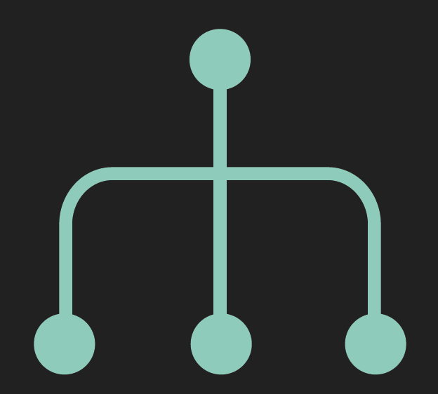
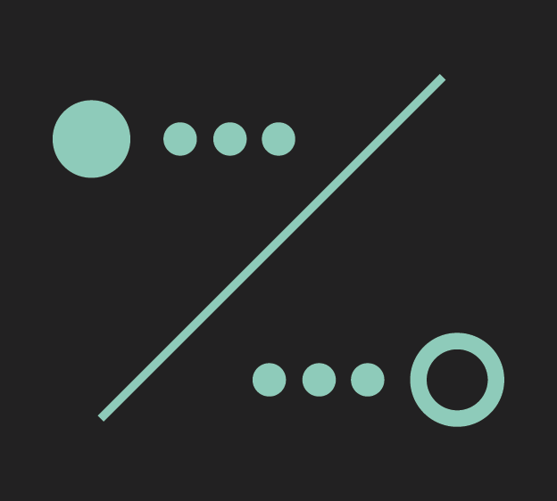
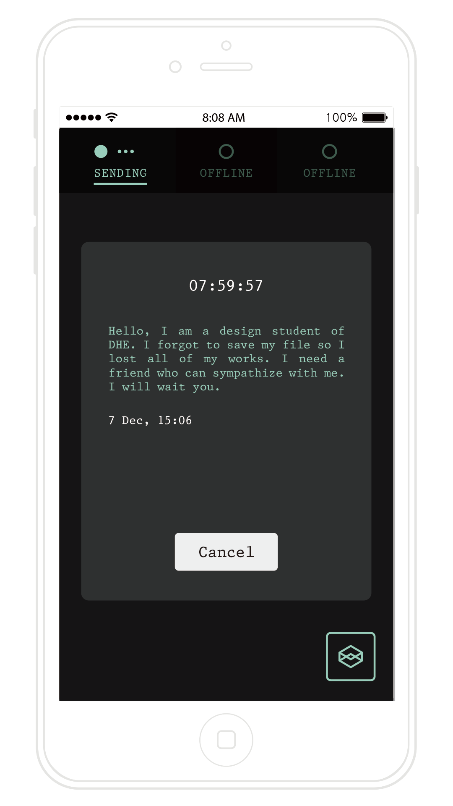
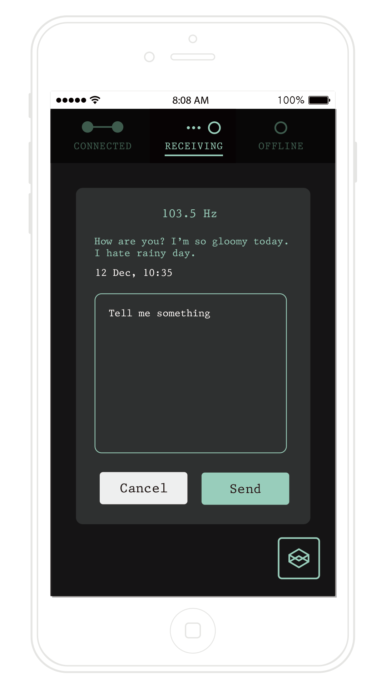
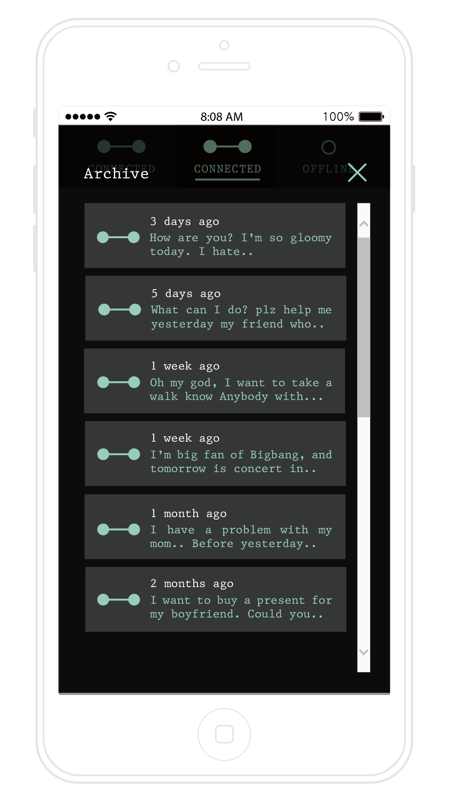

Messenger application inducing sincere communication
Frequency is designed for people who want ‘Sincere communication’ among the flood of instant messages. There are so many systems for instant messaging which satisfy hasteners. However, those technology doesn’t make more time for people, they always hold a cellphone in their hand and look at it allday.
We have hundreds of friends but nobody who can have honest talk with us. And people are no need but to make awkward, whenever they try to make new relationships. Do you remember that time, we send messages in 80 letters which we squeeze our words into and look forward to receive the answer. We wanted to brind back that experience.
Key functions
Ante nunc accumsan et aclacus nascetur ac ante amet sapien sed.

Three chaennels
Users have only three channels, and they can use one channel for only one person. This restriction makes people more focus on communication.

Two mode
There are two modes ‘Sending’ and ‘Receiving’. People, who get the messages, can select mind-matched messages by ignoring or replying.
Archiving box
User can save the dialogue whenever and whatever they want, so they can read it again later.
Application Details
Ante nunc accumsan et aclacus nascetur ac ante amet sapien sed.

Sending
User can send the message to other users with this function. It has 8 hour limitation, which automatically cut off the power.

Receiving
People, who get the messages, can also filter them until finding mind-matched messages. You can ignore it or reply it.

Archiving
You can save the dialogues, so that you can reread them. If you click the icon at the bottom right corner, you can see the dialogues that archived before.
Promotions
Promotion video
Interactive Prototype
UNIST Design & human enginnering school 2015 fall semester HCI design studio